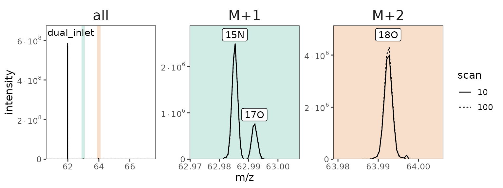
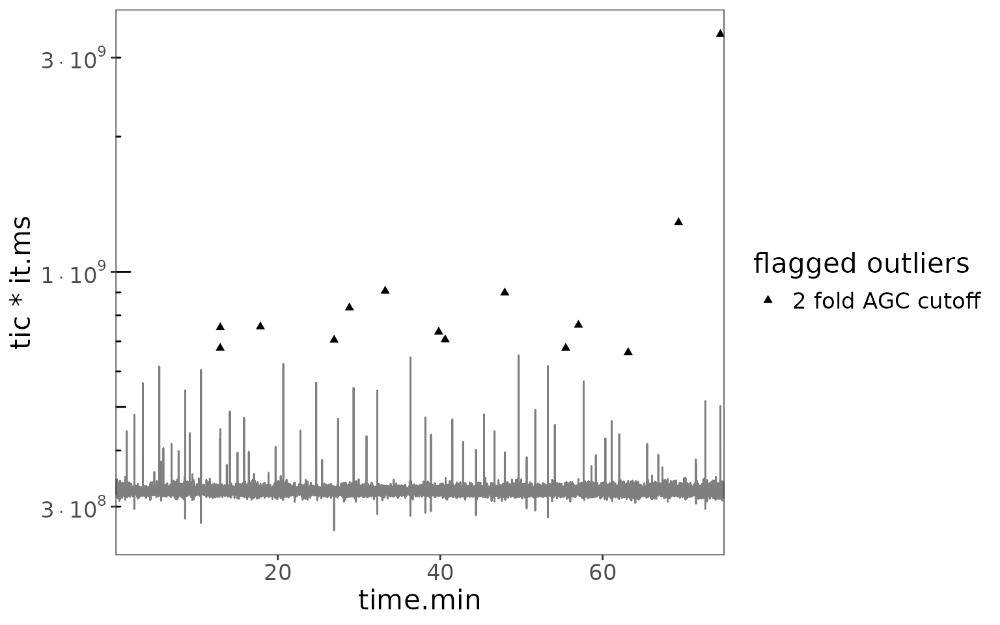

# libraries
library(isoorbi) #load isoorbi R package
library(forcats) #better ordering of factor variables in plots
library(dplyr) # for mutating data frames
library(ggplot2) # for data visualization
# default chunk options
knitr::opts_chunk$set(collapse = TRUE, comment = "#>")A basic data processing example
# Read .isox test data
df <-
system.file("extdata", "testfile_dual_inlet_new.isox", package = "isoorbi") |>
orbi_read_isox() |>
# Keep only most important columns; equivalent to simplify check box in IsoX
orbi_simplify_isox() |>
# Filter the data
orbi_filter_isox(
time_min = 0,
time_max = 75,
compounds = "NO3",
isotopocules = c("M0", "15N", "18O", "17O")
) |>
# clean the data by removing noise and outliers
orbi_flag_satellite_peaks() |>
orbi_flag_weak_isotopocules(min_percent = 10) |>
orbi_flag_outliers(agc_window = c(1,99)) |>
orbi_filter_flagged_data()
#> orbi_read_isox() is loading .isox data from 1 file(s)...
#> - loaded 9862 peaks for 1 compounds (NO3) with 4 isotopocules (M0, 15N, 17O,
#> 18O) from testfile_dual_inlet_new.isox in 0.23 seconds.
#> orbi_simplify_isox() will keep only columns 'filename', 'scan.no',
#> 'time.min', 'compound', 'isotopocule', 'ions.incremental', 'tic',
#> 'it.ms'...
#> ...complete in 0.01 seconds.
#> orbi_filter_isox() is filtering the dataset by compounds (NO3), isotopocules
#> (M0, 15N, 18O, 17O), minimum time (0 minutes), maximum time (0 minutes)...
#> ...removed 0/9862 rows (0.0%) in 0.01 seconds.
#> orbi_flag_satellite_peaks() is flagging minor signals (satellite peaks)...
#> ...flagged 0/9862 as satellite peaks (0.0%) in 0.35 seconds.
#> orbi_flag_weak_isotopocules() is flagging isotopocules from data that are
#> detected in less than 10% of scans in 1 data group(s) (based on
#> 'filename')...
#> ...flagged 0/4 isotopocules across all data groups in 0.08 seconds.
#> orbi_flag_outliers() is flagging the 1 % of scans with the lowest and above
#> 99 % of scans with the highest number of ions (`tic` * `it.ms`) in the
#> Orbitrap analyzer in 1 data group(s) (based on 'filename')...
#> ...flagged 49/2467 scans (2.0%) across all data groups in 0.07 seconds.
#> orbi_filter_flagged_data() removed 195 flagged records (2.0%) - 0 satellite
#> peaks, 0 weak isotopocule peaks, 195 outlier peaks in 0.00 seconds.Examples for block definitions
Calculations
The following code block contains functionality that is specific to processing data from dual inlet experiments
# define blocks
df_w_blocks <-
df |>
# general definition
orbi_define_blocks_for_dual_inlet(
ref_block_time.min = 10,
sample_block_time.min = 10,
startup_time.min = 5,
change_over_time.min = 2,
sample_block_name = "sample",
ref_block_name = "reference"
) |>
# fine adjustments
orbi_adjust_block(block = 1, shift_start_time.min = 2) |>
orbi_adjust_block(block = 4, set_start_time.min = 38, set_end_time.min = 44)
#> orbi_define_blocks_for_dual_inlet() is assessing block structure...
#> ...identified 7 blocks (4 'reference', 3 'sample') in data from 1 file(s)
#> in 0.07 seconds.
#> orbi_adjust_block() is making the following block adjustments in file
#> 20230518_05_USGS32_vs_USGS34:
#> - moving block 1 start from scan 825 (5.01 min) to 1155 (7.02 min)
#> orbi_adjust_block() is making the following block adjustments in file
#> 20230518_05_USGS32_vs_USGS34:
#> - moving block 4 start from scan 6090 (37.02 min) to 6255 (38.02 min)
#> - moving block 4 end from scan 7400 (44.98 min) to 7235 (43.98 min)
# get blocks info
blocks_info <- df_w_blocks |> orbi_get_blocks_info()
blocks_info |> knitr::kable()| filename | data_group | block | sample_name | data_type | segment | start_scan.no | end_scan.no | start_time.min | end_time.min |
|---|---|---|---|---|---|---|---|---|---|
| 20230518_05_USGS32_vs_USGS34 | 1 | 0 | reference | startup | NA | 5 | 820 | 0.031 | 4.985 |
| 20230518_05_USGS32_vs_USGS34 | 2 | 1 | reference | unused | NA | 825 | 1150 | 5.015 | 6.990 |
| 20230518_05_USGS32_vs_USGS34 | 3 | 1 | reference | data | NA | 1155 | 2465 | 7.021 | 14.982 |
| 20230518_05_USGS32_vs_USGS34 | 4 | 2 | sample | changeover | NA | 2470 | 2795 | 15.016 | 16.990 |
| 20230518_05_USGS32_vs_USGS34 | 5 | 2 | sample | data | NA | 2800 | 4110 | 17.021 | 24.982 |
| 20230518_05_USGS32_vs_USGS34 | 6 | 3 | reference | changeover | NA | 4115 | 4440 | 25.016 | 26.991 |
| 20230518_05_USGS32_vs_USGS34 | 7 | 3 | reference | data | NA | 4445 | 5755 | 27.022 | 34.984 |
| 20230518_05_USGS32_vs_USGS34 | 8 | 4 | sample | changeover | NA | 5760 | 6085 | 35.017 | 36.992 |
| 20230518_05_USGS32_vs_USGS34 | 9 | 4 | sample | unused | NA | 6090 | 6250 | 37.023 | 37.995 |
| 20230518_05_USGS32_vs_USGS34 | 10 | 4 | sample | data | NA | 6255 | 7235 | 38.025 | 43.982 |
| 20230518_05_USGS32_vs_USGS34 | 11 | 4 | sample | unused | NA | 7240 | 7400 | 44.012 | 44.984 |
| 20230518_05_USGS32_vs_USGS34 | 12 | 5 | reference | changeover | NA | 7405 | 7730 | 45.018 | 46.994 |
| 20230518_05_USGS32_vs_USGS34 | 13 | 5 | reference | data | NA | 7735 | 9045 | 47.024 | 54.985 |
| 20230518_05_USGS32_vs_USGS34 | 14 | 6 | sample | changeover | NA | 9050 | 9375 | 55.019 | 56.994 |
| 20230518_05_USGS32_vs_USGS34 | 15 | 6 | sample | data | NA | 9380 | 10690 | 57.024 | 64.985 |
| 20230518_05_USGS32_vs_USGS34 | 16 | 7 | reference | changeover | NA | 10695 | 11020 | 65.019 | 66.994 |
| 20230518_05_USGS32_vs_USGS34 | 17 | 7 | reference | data | NA | 11025 | 12335 | 67.025 | 74.985 |
Raw data plots
Plot 1: highlight blocks in data
df_w_blocks |>
# focus on 15N isotopocule
orbi_filter_isox(isotopocules = "15N") |>
# plot
ggplot() +
aes(x = time.min, y = ions.incremental,
group = data_group, color = data_type) +
scale_color_brewer(palette = "Dark2") +
geom_line() +
scale_x_continuous(breaks = scales::breaks_pretty(8), expand = c(0, 0)) +
theme_bw() +
labs(x = "time [min]", y = "intensity 15N", color = "blocks")
#> orbi_filter_isox() is filtering the dataset by isotopocules (15N)...
#> ...removed 7249/9667 rows (75.0%) in 0.00 seconds.
Plot 2: highlight blocks in background
Alternatively, we can use orbi_add_blocks_to_plot() to
highlight the blocks with a color background.
df_w_blocks |>
# focus on 15N isotopocule
orbi_filter_isox(isotopocules = "15N") |>
# start plot and add blocks to plot
ggplot() |>
orbi_add_blocks_to_plot() +
# finish plot
aes(x = time.min, y = ions.incremental) +
geom_line() +
scale_x_continuous(breaks = scales::breaks_pretty(8), expand = c(0, 0)) +
theme_bw() +
labs(x = "time [min]", y = "intensity 15N", fill = "blocks")
#> orbi_filter_isox() is filtering the dataset by isotopocules (15N)...
#> ...removed 7249/9667 rows (75.0%) in 0.00 seconds.

Ratio data
# with ratios
df_w_ratios <-
df_w_blocks |>
# define base peak
orbi_define_basepeak(basepeak_def = "M0") |>
# calculate isotopocule/base peak ratios
orbi_calculate_ratios()
#> orbi_define_basepeak() is setting the 'M0' isotopocule as the ratio
#> denominator...
#> ...base peak set for 3 isotopocules ('15N', '17O', '18O') in 0.16 seconds.
#> orbi_calculate_ratios() is calculating all isotopocule/base peak ratios...
#> ...calculated 7249 ratios for 3 isotopocules/base peak (15N, 17O, 18O) in
#> 0.01 seconds.
# calculate summary
df_summary <-
df_w_ratios |>
# segment (optional)
orbi_segment_blocks(into_segments = 3) |>
# calculate results
orbi_summarize_results(ratio_method = "sum")
#> orbi_segment_blocks() is segmenting 7 data blocks in 1 file(s)...
#> ...created 3 segments / block (on average) with 83 scans / segment (on
#> average) in 0.04 seconds.
#> orbi_summarize_results() is grouping the data by 'filename', 'compound',
#> 'basepeak', 'isotopocule', 'block', 'sample_name', 'segment',
#> 'data_group', 'data_type' and summarizing ratios using the 'sum' method...
#> ...completed in 0.06 seconds.Plot 1: ratios summary by block and segment
# plot all isotopocules
df_summary |>
filter(data_type == "data") |>
mutate(block_seg = sprintf("%s.%s", block, segment) |> fct_inorder()) |>
# data
ggplot() +
aes(
x = block_seg,
y = ratio, ymin = ratio - ratio_sem, ymax = ratio + ratio_sem,
color = sample_name
) +
geom_pointrange() +
facet_grid(isotopocule ~ ., scales = "free_y") +
# scales
scale_color_brewer(palette = "Set1") +
theme_bw() +
labs(x = "block.segment", y = "ratio")
Plot 2: ratios with block backgrounds and raw data
# demonstrate use of a base plot
plot_2 <-
df_w_ratios |>
filter(isotopocule == "15N") |>
mutate(panel = "raw ratios") |>
# plot with blocks
ggplot() |>
orbi_add_blocks_to_plot() +
# raw ratio data
geom_line(map = aes(x = time.min, y = ions.incremental)) +
# ratio summary data
geom_pointrange(
data = function(df)
df_summary |>
filter(isotopocule == df$isotopocule[1]) |>
mutate(panel = "summary"),
map = aes(
x = mean_time.min, y = ratio,
ymin = ratio - ratio_sem, ymax = ratio + ratio_sem,
shape = sample_name
),
size = 0.5
) +
facet_grid(panel ~ ., scales = "free_y") +
# scales
scale_x_continuous(breaks = scales::breaks_pretty(8), expand = c(0, 0)) +
theme_bw() +
labs(
x = "time [min]", y = NULL, fill = "blocks",
shape = "sample", title = "15N/M0"
)
plot_2
# same but with 18O
plot_2 %+%
(df_w_ratios |> filter(isotopocule == "18O") |> mutate(panel = "raw ratios")) +
labs(title = "18O/M0")
Plot 3: small scans
# calculate and plot ratios segmented with 5 scans at a time
df_w_ratios |>
# segment every 5 scans
orbi_segment_blocks(by_scans = 5) |>
# calculate results
orbi_summarize_results(ratio_method = "mean") |>
# focus on data only
filter(data_type == "data", isotopocule == "17O") |>
ggplot() +
aes(x = mean_time.min, y = ratio, group = block, color = sample_name) +
# data
geom_point() +
# scales
scale_x_continuous(breaks = scales::breaks_pretty(8), expand = c(0, 0)) +
scale_color_brewer(palette = "Dark2") +
theme_bw() +
labs(x = "time [min]", y = "17O/M0 ratio", color = "sample")
#> orbi_segment_blocks() is segmenting 7 data blocks in 1 file(s)...
#> ...created 50 segments / block (on average) with 5 scans / segment (on
#> average) in 0.05 seconds.
#> orbi_summarize_results() is grouping the data by 'filename', 'compound',
#> 'basepeak', 'isotopocule', 'block', 'sample_name', 'segment',
#> 'data_group', 'data_type' and summarizing ratios using the 'mean'
#> method...
#> ...completed in 0.44 seconds.